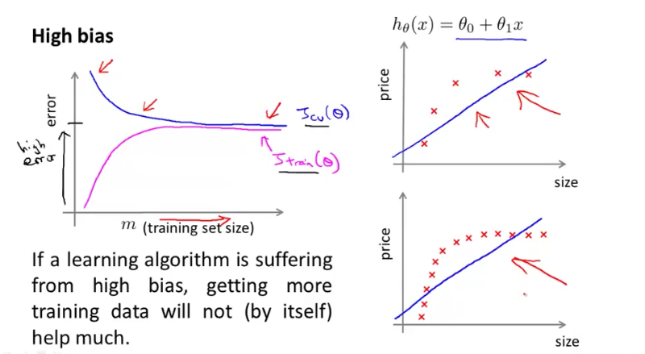
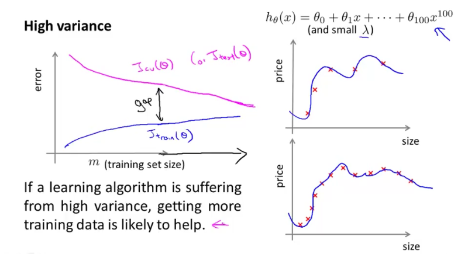
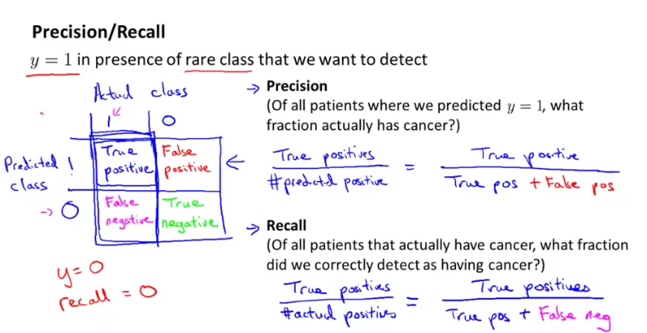

I just finished the 6th week of Stanford Machine Learning course. It’s still largely about neural network.
How to choose the number of layers in neural network?
The best default strategy is to choose to use one hidden layer. The more hidden layers you have, the more prone you’ll have high variance problems. But having too few layers makes the neural network prone to high bias problem. A practical strategy is to increment the number of layers - it’s like adding polynomial features or decreasing lambda λ in normal cost function to fix high bias problem - and get the Θ for the neural network. Then use the Θ to calculate the cost function of cross validation. Choose the Θ ( also number of layers) that has the minimum cost function of cross validation.
What’s Learning Curve?
Learning Curve shows whether you have a high variance or high bias problem. The horizontal axis represents m : the training set size; the vertical axis represents the errors (training error and cross validation error).
High Bias
When m increases, training error and cross validation error converge and keeps high.

High Variance
When m increases, training error and cross validation error also converge, but there’s a gap between training error and cross validation error and adding new training data helps.

Good practice when plotting learning curves with small training sets: It’s often helpful to average across multiple sets of randomly selected examples to determine the training error and cross validation error. For example, for m = 10, randomly choose 10 examples from training set and 10 examples from cross validation set, the calculate the training error and cross validation error. Do this for 50 times to get the average training error and cross validation error for m = 10.
What’s Training Set, Cross Validation Set, and Test Set?
A good (supervised learning) practice is to divide the data into 3 groups:
- Training Set : Learn the model parameters θ
- Cross Validation Set : Select the regularzation λ parameters to find tradeoff between high bias and high variance
- Test Set : Evaluate the “final” model
Recommended approach to develop a learning algorithm
- Start with a very simple, quick-and-dirty algorithm that you can implement quickly. Implement it and test it against your cross validation data.
- Plot learning curves to decide if more data, more features are likely to help.
- Error analysis: Manually examine the examples (in cross validation data) that your algorithm made errors on. See if you can spot any systematic trend in what types of examples it is making errors on. For example, for a mail spam classification problem, you could manually examine (1) What type of email it is - Pharma, Replica, Stealing Password? If most of the cross validation error is related to emails of Stealing Password, then it’s worth spending some time to see if you can come up with better features to categorise Stealing Password spam more correctly. (2) What features you think would have helped the algorithm classify them correctly. Finally, ALWAYS TEST your assumption again cross validation data.
What are Precision and Recall, and when are they useful?
When solving classification problems, such as Cancer classification, we might be proud to see that we got 1% error on test set (99% correct diagnoses). But wait, only 0.50& of patients have cancer. If we had a “cheat” version of hypothesis predicting all patients don’t have cancer, we would have 99.5% correct diagnoses. But by using “cheat” version, we are not actually improving our predicting algorithm, even though we have a better accuracy. This situation happens when we have skewed classes
Precision and Recall come to rescue:
- Precision : Of all patients where we predicted True (having cancer), what fraction actually has cancer. In the figure below, the denominator is the first row (all predicted True).
- Recall : Of all patients having cancer, what fraction did we correctly predict as having cancer? In the figure below, the denominator is the first column (all actual True)..

The “cheat” version would have 0 as recall, as it predicts all patients not having cancer: recall = zero/non-zero = 0. So we would find out the “cheat” version is not improving our algorithm.
Trading off precision and recall
When using logistic regression, we set a threshold for hθ(x). If threshold is 0.5, we predict 1 if hθ(x) > 0.5, and we predict 0 if hθ(x) < 0.5.
Suppose we want to predict y = 1 (cancer) only if very confident, we do not want to scare patients. We would set the threshold high, which results in higher precision and lower recall.
But if we want to be more preservative and avoid missing too many cases of cancer, we would set the threshold low, which results in higher recall and lower precision.
When does using a large training set makes sense?
It only makes sense when we have a low bias algorithm - algorithm with (1) many useful features and (2) many parameters θ. In this case, increasing training set size will help fix overfitting problem and training error will be closer to cross validation error. If features x do not contain enough information to predict y accurately (such as predicting a house’s price from only its size), even if we are using a neural network with a large number of hidden units, it won’t work. We can ask ourself whether features x contain enough information by imagining if we have a human expert look at the features x, can he/she confidently predict the value of y. Simply looking at a house’s size, even a realtor cannot confidently predict the price. He/She has to have more informations: number of rooms, which part of city, etc.
Questions
-
When features (e.p. polynomial of degree 8: x=40, x8 = too big) are badly scaled, we need to normalise the features. How do we do feature normalisation? What is mu, sigma? Do some further readings and earlier lectures reviews.
Answer: For each xj (j from 1 to m) we find the mean (mu) for xj over the training set, so that the mean of xj - mu is zero. Sigma represents the standard deviation of xj across the training set, it corrects bad scaled training set. Applying the following: (xj - mu)/sigma to X in order to normalise the features.